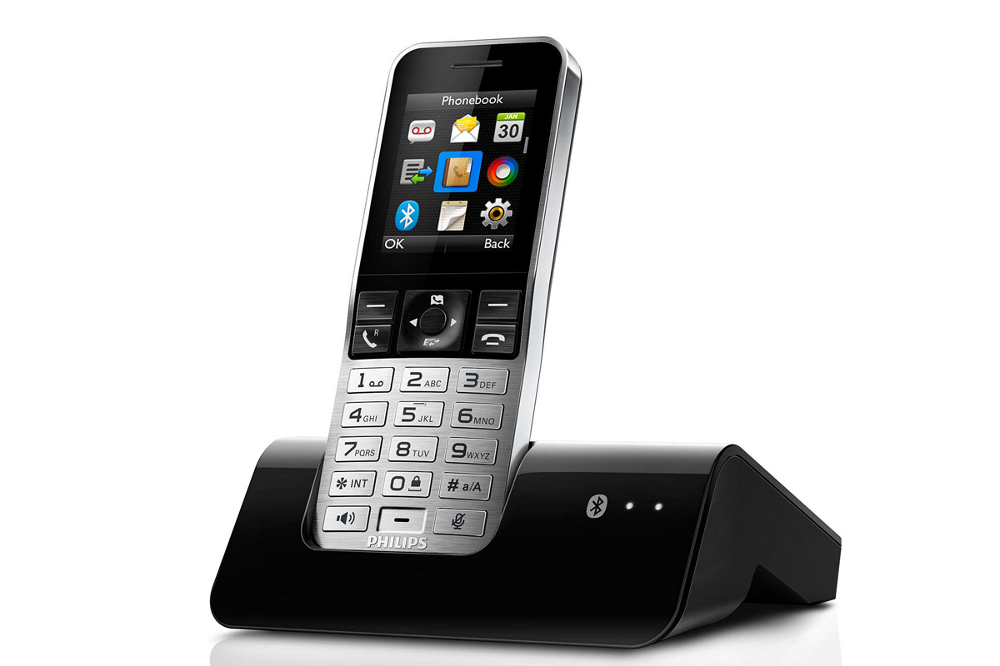

Kieno numeris (telefono)? Kas skambino?
Kieno numeris (telefono)? Kas skambino?
TelefonoNumeris.com – tai išskirtinis informacinis projektas internete. Bendradarbiaudami su įvairiais partneriais, lankytojams pateikiame pačią naujausią ir tiksliausią informaciją apie didžiąją dalį pačių populiariausių numerių Lietuvoje.
Retas mobiliojo ryšio naudotojas nėra patekęs į tokią situaciją, kuomet asmeniniame telefone randa praleistą skambutį, o jame – nežinomas telefono numeris. Būtent tokius atveju, neretai iškyla labai paprastas klausimas – kieno numeris? Statistika rodo, jog vos 10% visų vartotojų susidūrusių su šia problema perskambina ir pasiteirauja kas skambino. Didžioji dalis renkasi kur kas paprastenį ir konfidencialesnį būdą – keliauja į pasirinktą paieškos sistemą ir tiesiog veda konkretų numerį (sutrumpintai- tel. nr.). Rezultatų gausa dažniausiai gali priklausyti nuo keletos itin svarbių faktorių: numerio populiarumo, jo naudojimo paskirties (pvz.: įvairios paslaugos, sukčiai, reklamos, apklausos), skambinimo laiko (paros atžvilgiu). Ilgą laiką dirbdami ir analizuodami turimus paieškų duomenis, kurių didžiąją dalį sudaro telefono numeriai, pastebėjome, jog savo lankytojų ieškomus praleistus skambučius galime skirstyti į keletą kategorijų:
1. skambučiai iš užsienio . Žmones visuomet domina šalių kodai, pagal kuriuos galima nustatyti valstybę, kurioje buvo atliktas skambutis. Dažniausiai šiuo atveju yra skambinama siekiant išvilioti pinigus, apgauti arba kaip nors kitaip pasipelnyti iš tautiečių.
2. skambučiai iš laidinių telefonų . Šiuo atveju lankytojus domina miestų kodai. Sužinojus konkretų miestą, galima nesunkiai numanti kieno telefono numeris tai buvo. Šiais telefonų numeriais dažniausiai naudojasi vyresni vartotojai, bei įvairios valstybinės ir kitos įstaigos, tad galima sulaukti skambučių siekiant įpiršti įvarias paslaugas.
3. skambučiai iš paprastų mobiliojo ryšio tiekėjų . Tokius lankytojus domina telefonų kodai, pagal kuriuos galima nustatyti operatorių. Akivaizdu, kad tai vienas iš pačių dažniausių praleistų skambučių atvejų. Skambinimo tikslas gali būti visiškai bet koks – pradedant sumaišytu telefono numeriu ir baigiant įkyriomis ir laiką gaišinančiomis apklausomis.
Be įprastų skambučių neretai yra sulaukiama ir trumpųjų SMS žinučių, kurios vėlgi yra gaunamos iš nenustatyto numerio savininko. 25% vartotojų atsako į gautą pranešimą, dažniausiai pasiteiraudami - „kieno numeris tai yra?“. Tačiau įvairūs sukčiai (dažniausiai piktavaliai esantys įkalinimo įstaigose) yra sukūrę begalę tradicinių ir ne tik schemų, kaip išvilioti pinigus iš patiklių žmonių. Tad gavus nepatikimai atrodatį pranešimą apie neva netikėtą laimėjimą ar atsitikusią nelaimę, rekomenduojama tiesiog tai ignoruoti arba kreiptis į atitinkamas institucijas.
Omnitel : 8610 , 8611 , 8612 , 8613 , 8614 , 8615 , 8616 , 8617 , 8618 , 8619 , 8620 , 8621 , 8622 , 8623 , 8624 , 8625 , 8626 , 8627 , 8628 , 8629 , 8680 , 8682 , 8686 , 8687 , 8688 , 8692 , 8693 , 8695 , 8696 , 8698 , Tele2 : 8600 , 8601 , 8602 , 8603 , 8604 , 8605 , 8606 , 8607 , 8608 , 8609 , 8645 , 8646 , 8647 , 8648 , 8670 , 8671 , 8672 , 8673 , 8674 , 8675 , 8676 , 8677 , 8678 , 8679 , 8683 , 8684 , Bitė : 8630 , 8631 , 8633 , 8634 , 8635 , 8636 , 8637 , 8638 , 8639 , 8640 , 8641 , 8642 , 8643 , 8644 , 8650 , 8651 , 8652 , 8653 , 8654 , 8655 , 8656 , 8658 , 8681 , 8685 , 8689 , 8699 , Eurocom : 8649 , 8659 , Norfa : 8632 , Tella : 8657 , Akmenė 8425 , Alytus 8315 , Anykščiai 8381 , Birštonas 8319 , Biržai 8450 , Druskininkai 8313 , Elektrėnai 8528 , Gargždai 846 , Ignalina 8386 , Jonava 8349 , Joniškis 8426 , Jurbarkas 8447 , Kaišiadorys 8346 , Kaunas 837 , Kėdainiai 8347 , Kelmė 8427 , Klaipėda 846 , Kretinga 8445 , Kupiškis 8459 , Lazdijai 8318 , Marijampolė 8343 , Mažeikiai 8443 , Molėtai 8383 , Nida 8469 , Pakruojis 8421 , Palanga 8460 , Panevėžys 845 , Pasvalys 8451 , Plungė 8448 , Prienai 8319 , Radviliškis 8422 , Raseiniai 8428 , Rokiškis 8458 , Skuodas 8440 , Šakiai 8345 , Šalčininkai 8380 , Šiauliai 841 , Šilalė 8449 , Šilutė 8441 , Širvintos 8382 , Švenčionys 8387 , Tauragė 8446 , Telšiai 8444 , Trakai 8528 , Ukmergė 8340 , Utena 8389 , Varėna 8310 , Vilkaviškis 8342 , Vilnius 85 , Visaginas 8386 , Zarasai 8385 , Ieškomiausi numeriai 37052041941 43889 232
Šis numeris priklauso UAB CSC Telecom . Pasitikrini numerio priklausomybę operatoriui galima Ryš...
37052041866 37552 157864593271 alytus
310900402 61805 131lfifAccurdy
37052041942 17657 78Numeris atgijo. Vėl skambina. Tyli.
37052041860 16707 60Skambina tyli ir groja muzika iškarto atsiliepė
37052507004 23346 59Reklamuoja
37052041940 7942 56vis dar nekalba :(
37052041955 9517 55labai baisu kad skambineja
37052041944 10161 522 praleisti skambuciai, paskaiciau komentarus ir uzdejau BLOCK.
37052041950 10563 47Skambina tyli
© 2011-2020 telefononumeris.com / Klaida? (Informacija pašalinama per 3 d.d.) Norite susisiekti spauskite
čia